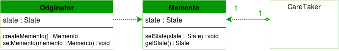

Introduction
Today we will be looking at a behavioral pattern:Memento Design Pattern.Memento pattern is a behavioral design pattern. Memento pattern is used to restore state of an object to a previous state. As your application is progressing, you may want to save checkpoints in your application and restore back to those checkpoints later.Memento let's us do exactly that.
Videos
| Memento Design Pattern | |
| Memento Design Pattern in Java | The Memento Pattern Explained and Implemented in Java |
Memento Design Pattern
The Rationale
Intent of Memento Design pattern is without violating encapsulation, capture and externalize an object’s internal state so that the object can be restored to this state later.
The UML
Here is the UML for Memento Design Pattern:
Here are the components of memento design pattern
originator :the object for which the state is to be saved. It creates the memento and uses it in future to undo.
memento :the object that is going to maintain the state of originator. Its just a POJO.
caretaker :the object that keeps track of multiple memento. Like maintaining savepoints.
A Caretaker would like to perform an operation on the Originator while having the possibility to rollback. The caretaker calls the createMemento() method on the originator asking the originator to pass it a memento object. At this point the originator creates a memento object saving its internal state and passes the memento to the caretaker. The caretaker maintains the memento object and performs the operation. In case of the need to undo the operation, the caretaker calls the setMemento() method on the originator passing the maintained memento object. The originator would accept the memento, using it to restore its previous state. Let’s see an example of Memento design pattern.
Code Example
Java:Memento.java
Common Usage
A snapshot of (some portion of) an object’s state must be saved so that it can be restored to that state later.
A direct interface to obtaining the state would expose implementation details and break the object’s encapsulation.